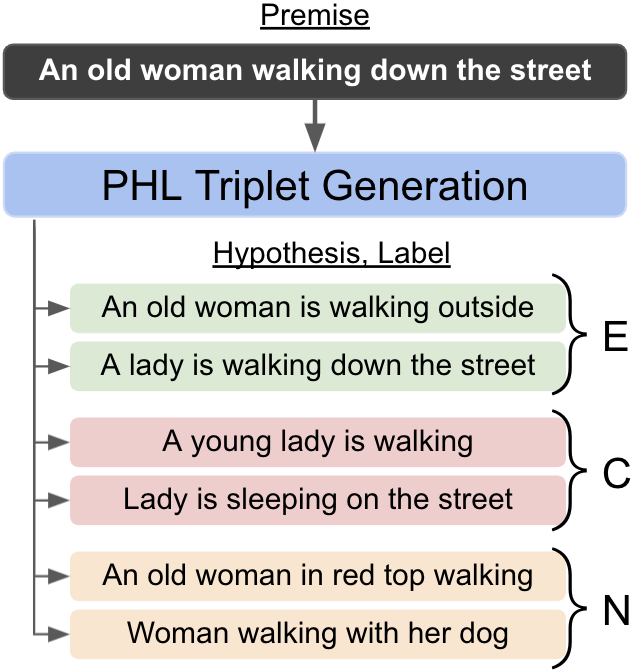
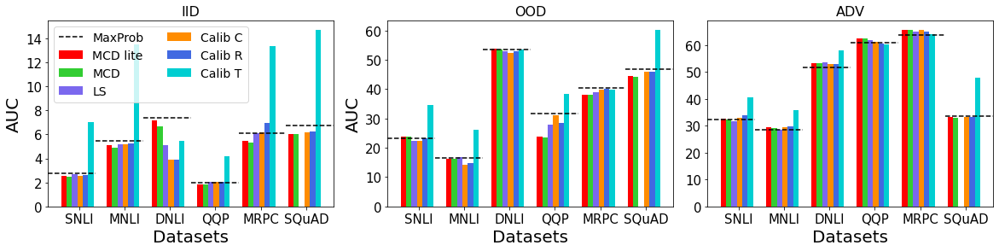
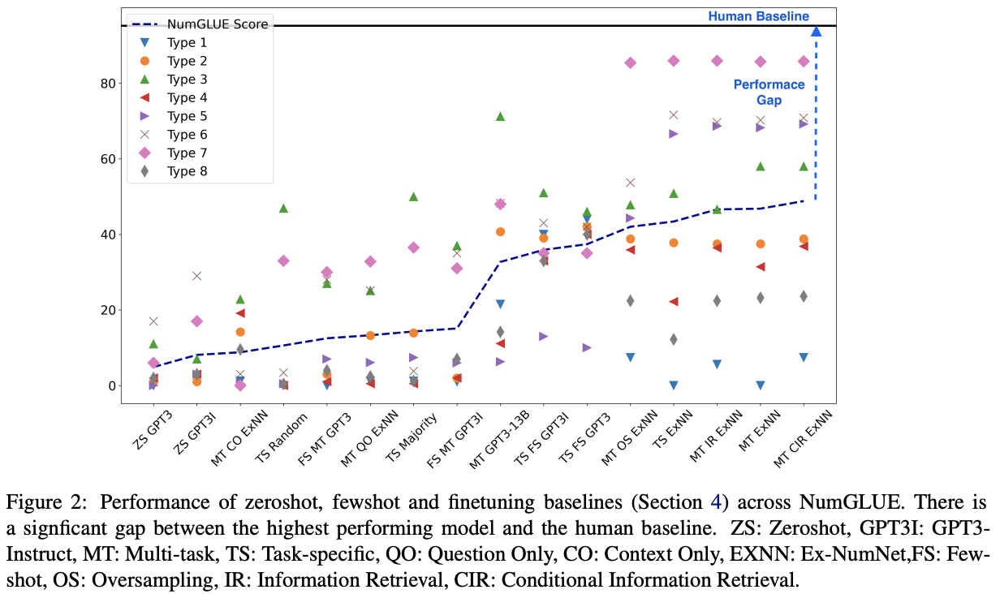

Arizona State University
2019-present
I'm a third year Ph.D. student working in Natural Language Processing/Understanding with Dr. Chitta Baral. My primary interest lies in areas of real-world importance such as Selective Prediction, Learning from Less Supervision, Question Answering, Robustness, Multi-task Learning, Efficient Evaluations, etc. I've published several top-tier conference papers on these topics. I'm proficient in developing and applying State-of-the-art ML/NLP techniques in Python using libraries such as PyTorch, PyTorch-Lightning, Transformers, and Spacy.
2019-present

2018-2019

Summer 2017

2014-2018
We conduct Instance-Level Difficulty Analysis of Evaluation data (ILDAE) in a large-scale setup of 23 datasets and demonstrate its five novel applications:
We explore three unsupervised settings for NLI and propose a procedural data generation approach that outperforms the existing approaches by ~13% and raises the state-of-the-art unsupervised performance on SNLI to 66.75%.

Selective Prediciton enables systems to abstain from making predictions when they are likely to be incorrect. In this work, we systematically study 'selective prediction' in a large-scale setup of 17 datasets across several NLP tasks. We conduct experiments in in-domain, out-of-domain, and adversarial settings and evaluate several selective prediction approaches such as MaxProb, Monte-Carlo Dropout, Label Smoothing, and Calibration (C, R, and T). Our investigation results in numerous interesting findings.

We proposed a multi-task benchmark that evaluates AI systems on eight different numerical understanding tasks and showed that it is far from being solved with neural models including large language models performing significantly worse than humans (lower by 46.4%).Proposed a knowledge-retrieval based MTL method that outperforms existing models.

We introduce an architecture that allows agents to detect novelties, characterize those novelties, and build an appropriate adaptive model to accommodate them.
Reasoning about action and change has been a top focus in the knowledge representation subfield of AI from the early days of AI and more recently it has been a highlight aspect in common sense question answering. We consider four action domains (Blocks World, Logistics, Dock-Worker-Robots and a Generic Domain) in natural language and create QA datasets that involve reasoning about the effects of actions in these domains. We investigate the ability of transformers to (a) learn to reason in these domains and (b) transfer that learning from the generic domains to the other domains.
GPA: 4/4
GPA: 9.11/10